Everything you need for Wally's big trip round Cairns and Far North Queensland: the story so far, every way to control him, the places, the talismans, and a few tips from Kenny.
The story
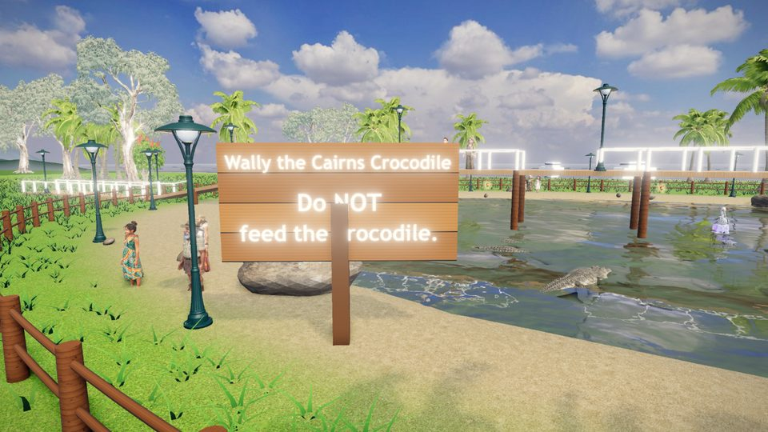
Croc Park, where it all begins.
In Croc Park, an ordinary crocodile swimming in the pond touches something at the bottom: the sceptre of the Croc King. In a flash he changes. He stands up, he can talk, and he is part human. Meet Wally.
Being part human comes with a catch: Wally now needs people food. Lucky for him, his new mate Kenny the koala knows the rules: keep your distance and people will throw you their lunch.
The sceptre has lost its six talismans. Find them all across the Cairns region, carry the sceptre to the Croc King, and he will grant Wally one wish. What happens then, you find out when Wally does.
The basics
Stay fed
The feed-o-meter (top right) runs down as Wally moves. Catch the food people throw to fill it up. Catch it in the air or with a leap for more points, and keep a streak going.
Keep your distance
People throw food when Wally is near, but not too near. A ring on the ground shows the sweet spot round each group. Come too close and they get scared and run off with their snacks.
Kenny's jar
If the feed-o-meter empties, Kenny runs in with his jar of Vegemite toast to revive Wally. He can do it three times in each place (the dots by the meter). After that, the place starts again.
Keys and chests
Every place has a quest in two parts: find the key, then the chest it opens. The chests hold the talismans.
Map, Book and buttons
Map (Tab): the whole trip, where Wally has been, and where to next.
Book (B): everything Wally has found, his stamps and his items. It opens by itself for the big moments: a talisman, a key, the sceptre.
Outfits and Gear: dress Wally up, and carry useful things.
The first time Wally arrives somewhere, a fly-over shows the place. While it plays, the game checks your device and sets the detail for smooth play. Skip it with Space.
Controls
Play with a keyboard, a mouse, a game controller or a touch screen. They all work the same way: forward goes the way Wally is facing, left and right turn him, back turns him round, and the camera follows behind him.
Keyboard
Key
What it does
W or ↑
Go forward, the way Wally faces
AD or ←→
Turn left and right
S or ↓
Turn round
Space
Jump (leap for food in the air); in the water, swim up
Shift
Run on all fours; in deep water, dive under
QE
Turn the camera
C
Swing the camera behind Wally
Mouse wheel
Zoom in and out
Tab · B · P · M
Map · Book · Pause · Sound on and off
Mouse
Click the game to hand it the cursor. Now moving the mouse turns Wally.
Hold the left button to run him forward.
Hold the right button to look around with the camera; let go and the mouse steers Wally again.
Esc gives the cursor back. Any message box gives it back too, and you get control again when you close it.
Game controller (Xbox, PlayStation, Switch Pro)
Control
What it does
Left stick or d-pad
Steer Wally: up goes forward, sides turn, down turns round
Right stick
Turn the camera
A (cross)
Jump; in the water, swim up
B (circle) or a trigger
Run on all fours; in deep water, dive
Y (triangle)
Swing the camera behind Wally
Start
Pause
Phone and tablet
Left thumb anywhere on the left half: a joystick to steer.
Drag on the right half to turn the camera.
The Jump and Duck buttons; in deep water, Dive and Up buttons appear.
Settings
In the settings you can change the steering to camera-relative (Wally moves toward the camera's view instead of turning), turn tips, music and sound effects on or off, and show the frame rate and detail level.
The boomerang throw
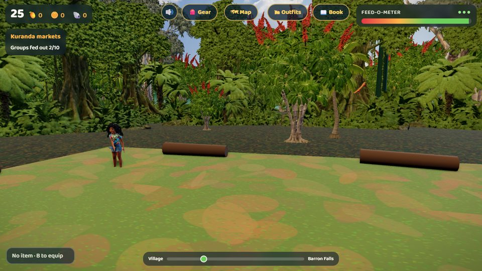
Walk in under the archway.
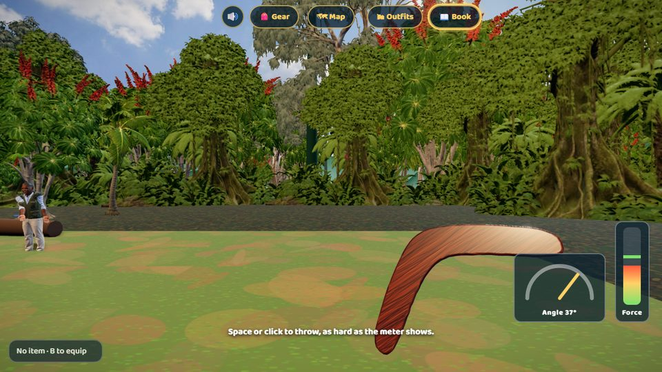
Set the angle, then the force.
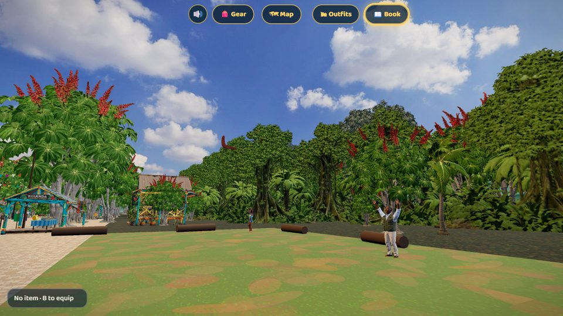
Watch it come round, then catch it.
Angle: tip the boomerang out with ↑↓ (or WS, the mouse, or the stick). The meter shows how far it leans from upright. Press Space, click, or A to set it.
Force: the force meter swings up and down. Press Space, click, or A to throw, as hard as it shows.
Catch: as it comes back, a Catch! ring appears. Press Space, click, or A.
The flight is real physics. Too upright and it dives in; too flat or too hard and it climbs over your head; too soft and it falls short. A flatter throw needs less force. For your first two throws, a green zone on the force meter shows what will bring it back.
The places
Seven places, from Cairns up to the Daintree, in the order Wally travels.
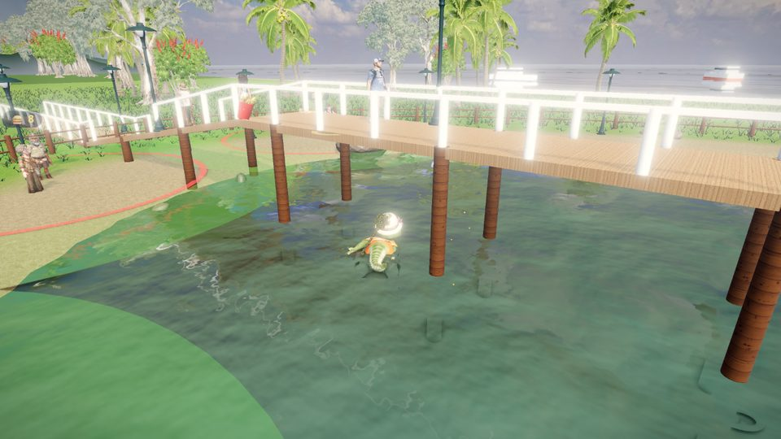
1. Croc Park
Where it all begins. Feed out every group of visitors to earn the gate key, and the machete waits at the gate.
Win: the machete, for the cane fields.
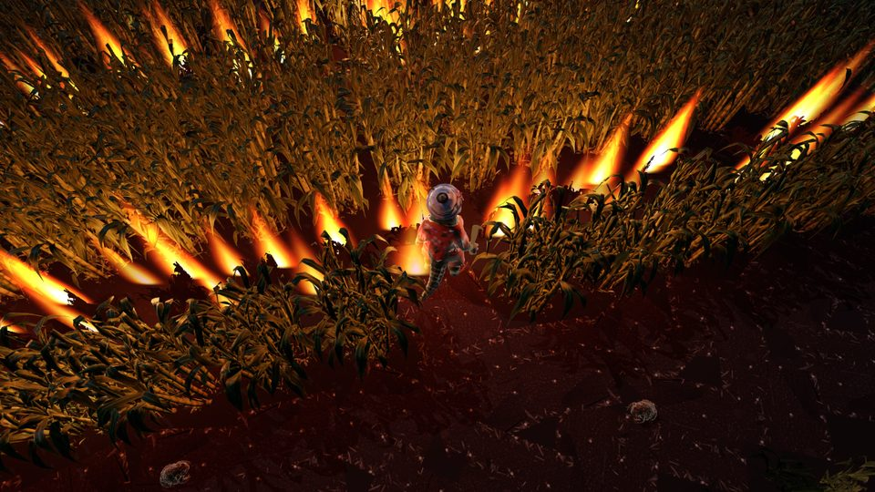
2. The Cane Fields
Dusk south of Cairns, the ranges on the skyline. Cut paths through the sugar cane with the machete and eat the cut cane to keep going. Toads and flying foxes steal it. The cane is burning in rings: the fire can never hurt Wally, but he cannot go through it. Find the way round to the middle.
Win: the fire talisman.
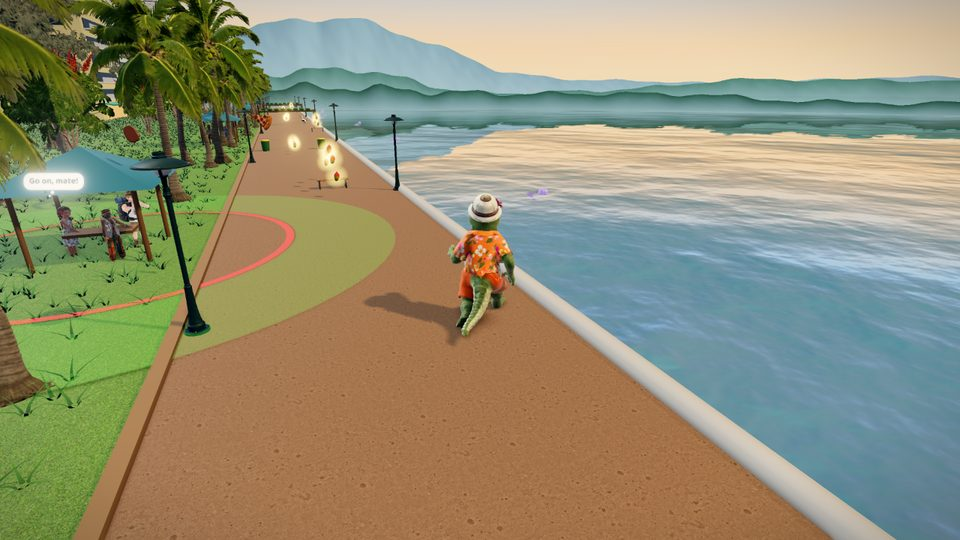
3. The Esplanade
The Cairns waterfront: the boardwalk, the lagoon, the pier. Collect the Golden Mangoes along the walk; the chest at the Lagoon opens for enough of them.
Win: the sun talisman, and the Big Golden Mango the reef will need.
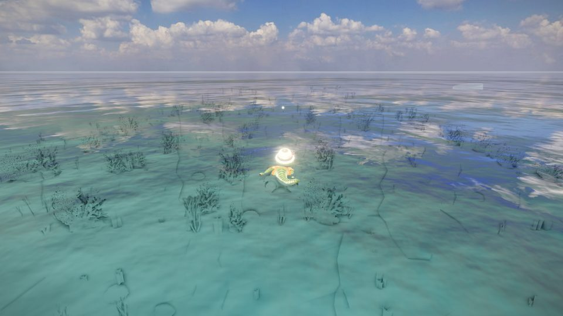
4. The Great Barrier Reef
Out from Cairns. Dive into the coral maze (watch your air). A giant clam in a dead end takes the Big Golden Mango and gives up the pearl key, which opens the pirate chest in the cave.
Win: the moon talisman, and the Skyrail pass.
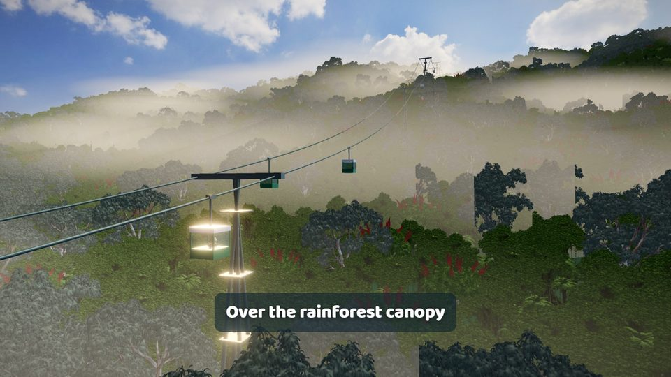
The Skyrail
The ride from the valley station near Cairns, up over the rainforest canopy and the Barron Gorge, onto the Tableland at Kuranda. It plays the first time Wally heads for Kuranda.
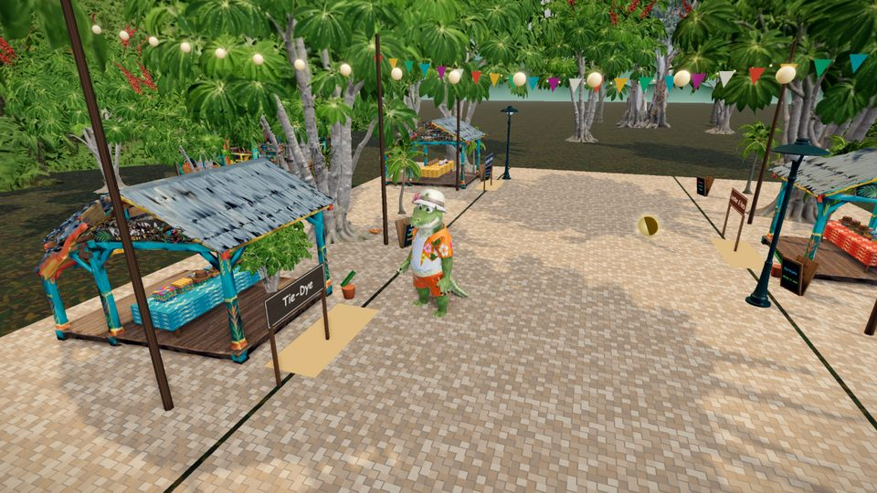
5. Kuranda
The village in the rainforest. Feed every group along the market street and fill the feed-o-meter. Halfway down, walk in under the Boomerang Throwing archway: a local instructor shows Wally how to throw and catch a boomerang, and the first catch wins a talisman. At the end of the street, the zip line down the Barron Gorge.
Win: the air talisman (the boomerang) and the water talisman (the zip line).
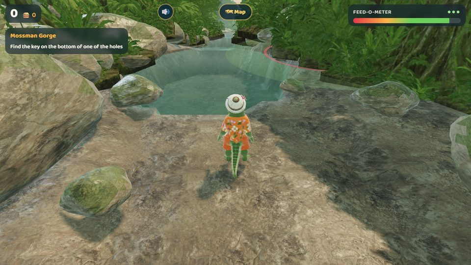
6. Mossman Gorge
Clear swimming holes stepping down the gorge over granite, joined by smooth rock slides. Dive (Shift) to look on the bottom: the key is in one hole, the chest in the last.
Win: the opal, the earth talisman: the last of the six.
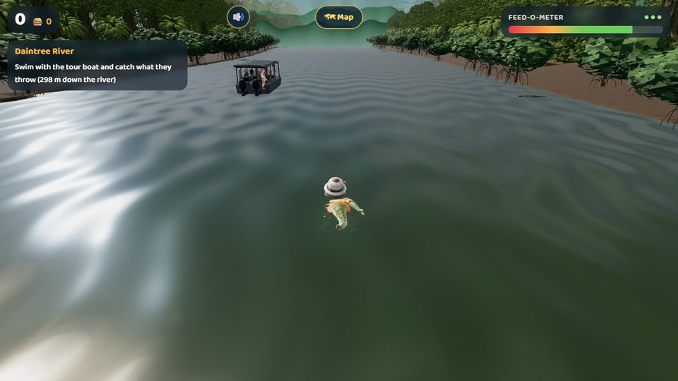
7. The Daintree
The oldest rainforest, the widest river, and the end of the journey. Swim with the tour boat and catch what the passengers throw, but watch out: the wild crocs slide off the banks and come after Wally, and they snap up any food they reach first. Keep moving.
The six talismans and the sceptre
Each talisman goes back into its own setting on the Croc King's sceptre: heaven above (sun, moon and air), earth below (earth, water and fire).
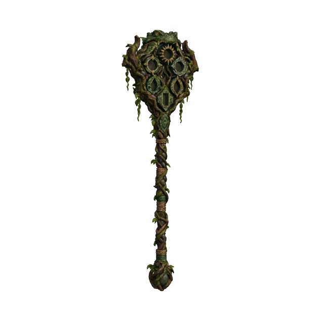
The sceptreFound at the bottom of the Croc Park pond.
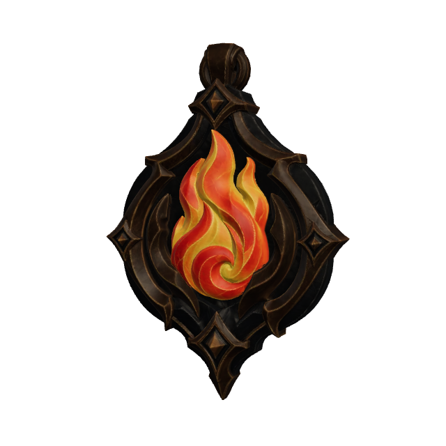
FireThe cane fields
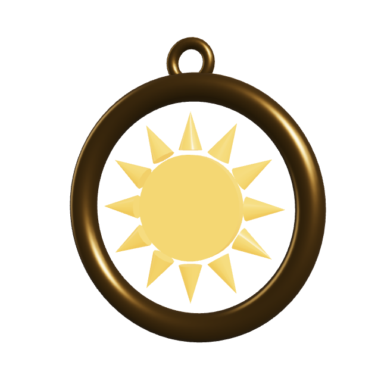
SunThe Esplanade
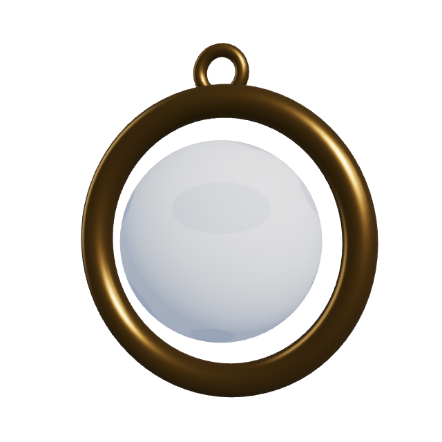
MoonThe reef
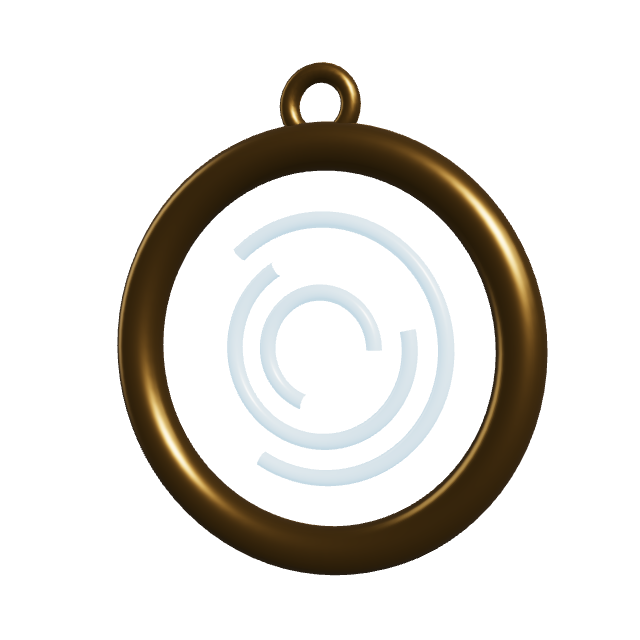
AirKuranda: the boomerang
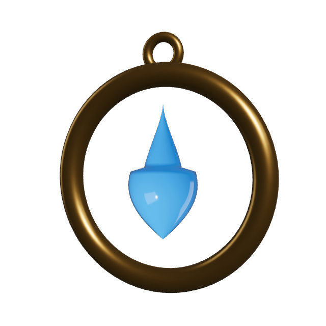
WaterKuranda: the zip line
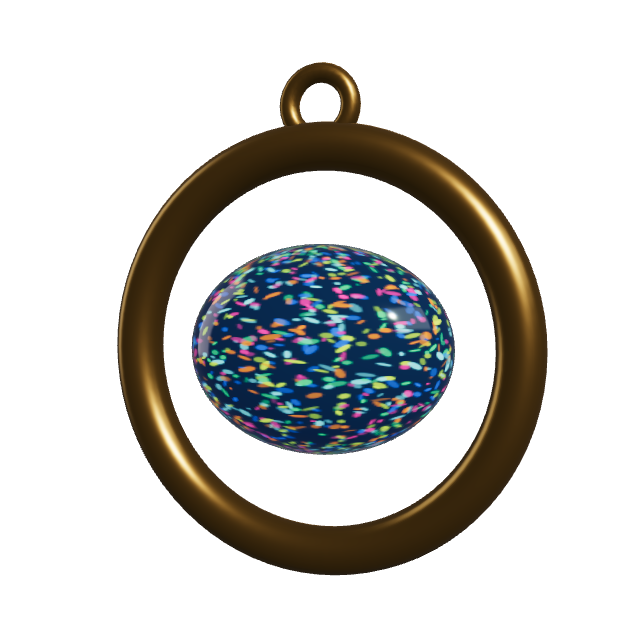
EarthMossman: the opal
The sceptre and the fire talisman are the finished artwork. The sun, moon, air, water and earth pictures are stand-ins until their artwork is made.
Tips from Kenny
Stand in the sweet spot, not on top of people. Scared people run off with their lunch.
Food caught in the air, or with a leap, is worth more than food off the ground.
Watch the feed-o-meter. When it turns red, go and find a group, fast.
In deep water, watch your air too. Come up before it runs out.
On the Daintree, never stop for long: the wild crocs are slower than Wally, but they close in on a croc that sits still.
Lost? Open the Map (Tab): it shows the job for each place.
Trouble keeping it smooth? The fly-over on the first visit sets the detail for your device. You can see it with "Show frame rate and detail" in the settings.
Acknowledgement of Country
Chomp 3D is set in Far North Queensland. We acknowledge the Traditional Owners of the lands and waters it celebrates, including the Gimuy Walubara Yidinji and Yirrganydji peoples of Cairns, the Djabugay people of Kuranda and the Barron Gorge, and the Eastern Kuku Yalanji people of the Daintree and Mossman Gorge, and pay our respects to Elders past and present. Aboriginal and Torres Strait Islander people are welcome to tell us how they would like to be shown in the game, and to change or add characters.
A home to many
Australia is home to people from all over the world, and it welcomes visitors from everywhere. The people who throw Wally his lunch reflect that: locals and travellers, young and old, from many places and many cultures, all sharing the same beautiful corner of the country.
For the love of Cairns
Cairns and the Cairns region are among the most beautiful places on Earth. It is awe-inspiring: ancient rainforest running down to the sea, giant waterfalls, vast sugar cane fields, paradise beaches and the Great Barrier Reef, all within reach of one city. If you ever get the chance, go.
Rainforests
Giant waterfalls
Sugar cane fields
Paradise beaches
The Great Barrier Reef
Green Island
Coral reef snorkelling
Scuba diving
Cruises
Swimming
The Atherton Tablelands
Skyrail
The Kuranda Scenic Railway
Rainforest river cruises
River rafting
Zip lining
Bungee jumping
Boomerang throwing
Golf courses
Resorts
Shopping
Nightlife
And lots of crocs
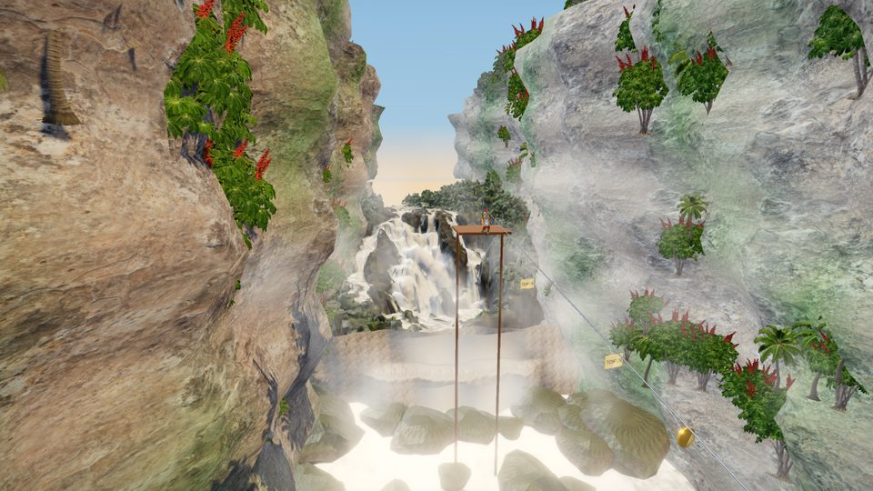
The Barron Gorge, in the game.
Be Crocwise
And remember: do NOT feed the crocodiles.
Wally is a cartoon. Real saltwater crocodiles are wild animals and dangerous. Never feed them, never approach them, keep well back from the water's edge in croc country, and obey the warning signs. Queensland's advice is to be Crocwise.
Box jellyfish and other marine stingers are dangerous too. In stinger season, swim at patrolled beaches inside the stinger nets, wear a stinger suit, and follow the lifeguards' advice.
Chomp 3D: Wally's Cairns Adventure. Created by Ken Bingham. About the game